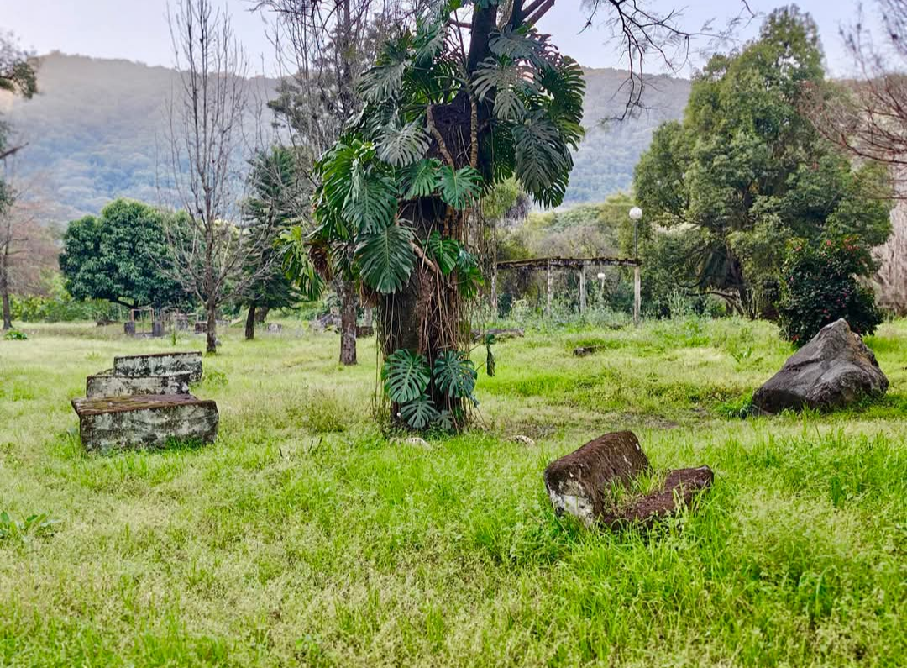

1. El Diagnóstico: Lo efímero vs. Lo histórico
Las redes sociales son herramientas increíbles para la inmediatez, pero la información se pierde en el scroll. Un "me gusta" o una historia de Instagram desaparecen en 24 horas.
La propuesta de DESCUBRIR Lules es crear el Archivo Histórico Digital de la ciudad: un espacio donde cada obra, cada gestión y cada evento quede registrado de forma seria, verificable y audiovisual para las futuras generaciones.
2. ¿Cómo trabajamos? (Nuestro diferencial)
No nos limitamos a publicar la foto del día. Armamos un registro documental completo:
- Antes y después: Buscamos archivos fotográficos del lugar.
- La voz de los protagonistas: Entrevistas a funcionarios, obreros y vecinos.
- Registro audiovisual: Videos del proceso, no solo del resultado.
- Hemeroteca interactiva: Todo queda guardado y accesible en nuestra PWA (aplicación).
La Quebrada: Antes



3. Ejemplo Práctico: La Quebrada de Lules
La recuperación de las 120 hectáreas es un hecho histórico. Nuestra propuesta es documentar su transformación desde el día cero.
Desde la documentación de las tierras, la apertura, las mejoras de infraestructura, hasta el impacto turístico. Un informe que servirá como fuente de consulta para estudiantes, docentes e investigadores.
4. Beneficios Mutuos
Para la Gestión de la Intendente: Su obra queda registrada de manera profesional y trasciende los mandatos. Un legado documentado para la ciudad.
Para DESCUBRIR Lules: Consolidarnos como el medio de referencia en periodismo de archivo y memoria local.